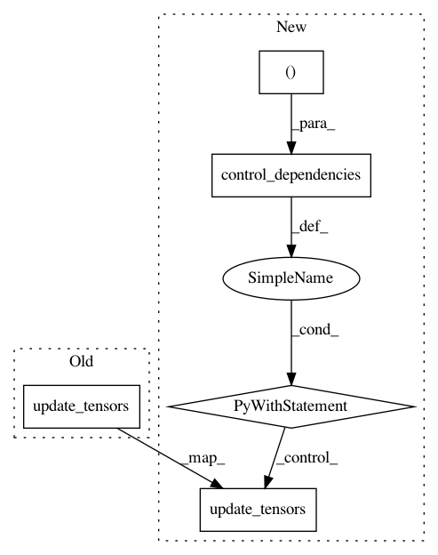

603026f0325339c6412e5c045b5149f351bd1778,tensorforce/core/models/model.py,Model,api_act,#Model#,764
Before Change
pred=initialize, true_fn=initialize_internals, false_fn=retrieve_internals
)
Module.update_tensors(**states, **internals)
actions, internals = self.core_act(states=states, internals=internals)
Module.update_tensors(**actions)
// Exploration
After Change
)
else:
variable_noise_tensors = (incremented_timestep,)
// Initialize or retrieve internals
if len(self.internals_spec) > 0:
with tf.control_dependencies(control_inputs=variable_noise_tensors):
buffer_index = self.buffer_index[parallel]
one = tf.constant(value=1, dtype=util.tf_dtype(dtype="long"))
def initialize_internals():
internals = OrderedDict()
for name, init in self.internals_init.items():
internals[name] = tf.expand_dims(input=init, axis=0)
return internals
def retrieve_internals():
internals = OrderedDict()
for name in self.internals_spec:
internals[name] = tf.gather_nd(
params=self.internals_buffer[name],
indices=[(parallel, buffer_index - one)]
)
return internals
zero = tf.constant(value=0, dtype=util.tf_dtype(dtype="long"))
initialize = tf.math.equal(x=buffer_index, y=zero)
internals = self.cond(
pred=initialize, true_fn=initialize_internals, false_fn=retrieve_internals
)
retrieved_internals = util.flatten(xs=internals)
else:
internals = OrderedDict()
retrieved_internals = variable_noise_tensors
// Core act: retrieve actions and internals
with tf.control_dependencies(control_inputs=retrieved_internals):
Module.update_tensors(**states, **internals)
actions, internals = self.core_act(states=states, internals=internals)
Module.update_tensors(**actions)
// Exploration
with tf.control_dependencies(
control_inputs=(util.flatten(xs=actions) + util.flatten(xs=internals))
):
if not isinstance(self.exploration, dict):
In pattern: SUPERPATTERN
Frequency: 3
Non-data size: 5
Instances
Project Name: reinforceio/tensorforce
Commit Name: 603026f0325339c6412e5c045b5149f351bd1778
Time: 2019-02-06
Author: alexkuhnle@t-online.de
File Name: tensorforce/core/models/model.py
Class Name: Model
Method Name: api_act
Project Name: reinforceio/tensorforce
Commit Name: 7b9bb10862356401c474c5dd916108ec0069ec2d
Time: 2020-04-18
Author: alexkuhnle@t-online.de
File Name: tensorforce/core/estimators/estimator.py
Class Name: Estimator
Method Name: tf_estimate
Project Name: reinforceio/tensorforce
Commit Name: cce10ef4682c6b5d4a8b24edd0032088707b5491
Time: 2019-10-12
Author: alexkuhnle@t-online.de
File Name: tensorforce/core/models/tensorforce.py
Class Name: TensorforceModel
Method Name: tf_optimize